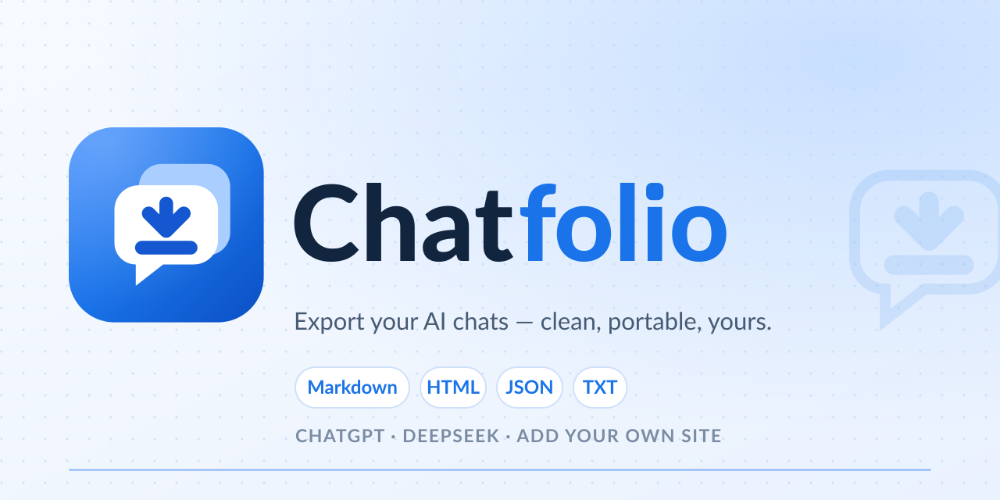

A chat bubble becoming a saved page: the bubble is the conversation, the stacked sheet
behind it is the folio, and the arrow is the export. Built on the extension's existing
#1A73E8 accent. All source files are plain SVG — no build step, no external fonts.
The i carries a rounded-square dot that echoes the app tile.
Wordmark outlines are drawn from Lato Heavy (SIL Open Font License 1.1), converted to
paths so the SVG never depends on a locally installed font.
16 / 32 px use a simplified glyph (no back sheet, 10% larger) so the arrow stays legible in the browser toolbar.

Upload this in Repo → Settings → Social preview. It lists only sites with working adapters; update the text and re-render when Claude ships.
<!-- README.md — auto-switches with GitHub's colour scheme -->
<p align="center">
<picture>
<source media="(prefers-color-scheme: dark)" srcset="assets/logo-dark.png">
<img src="assets/logo.png" alt="Chatfolio" width="360">
</picture>
</p>// manifest.json
"icons": {
"16": "assets/icon-16.png",
"32": "assets/icon-32.png",
"48": "assets/icon-48.png",
"128": "assets/icon-128.png"
}PNG lockups (logo.png / logo-dark.png) are 2× renders for
README reliability; the SVGs remain the source of truth. icon-mono.svg uses
currentColor — set color in CSS or the SVG root to recolour it.